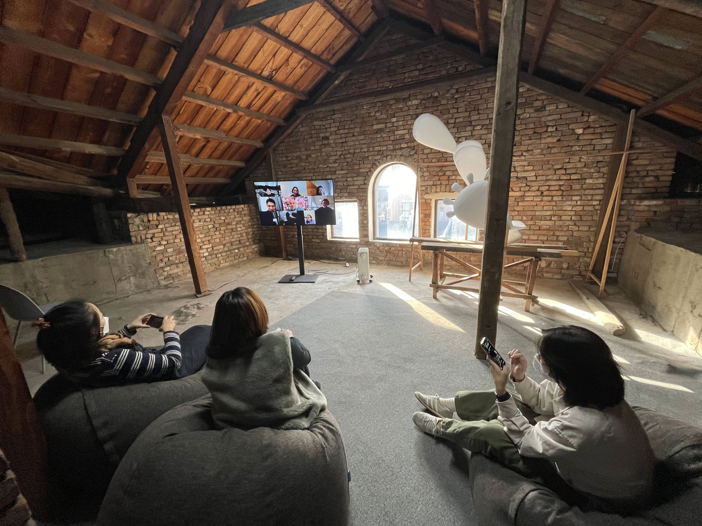
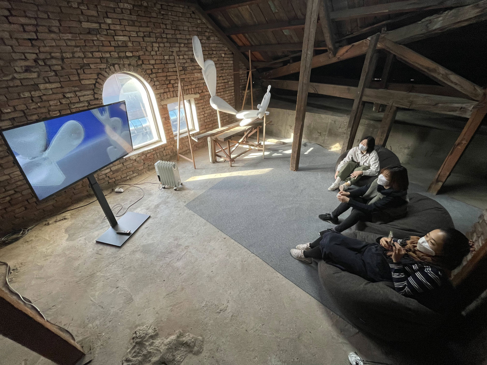
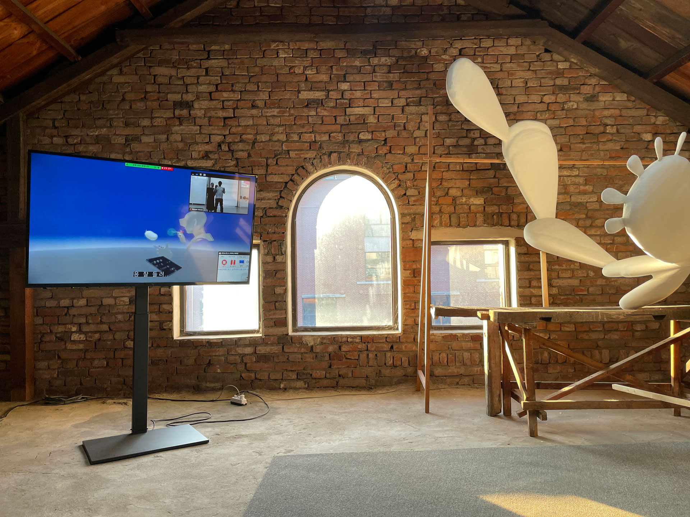
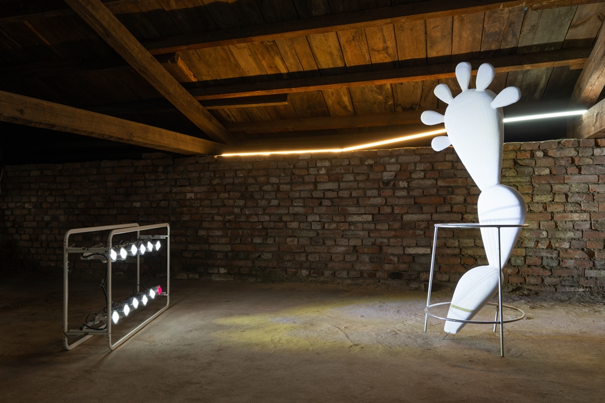
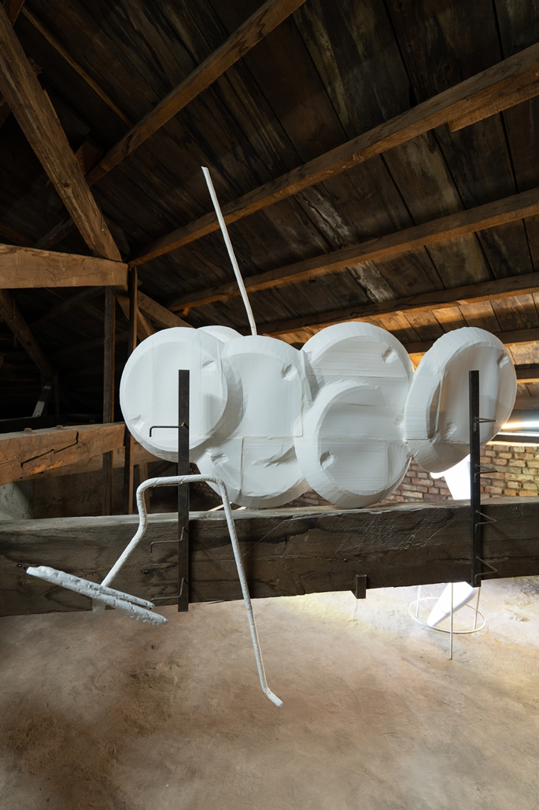
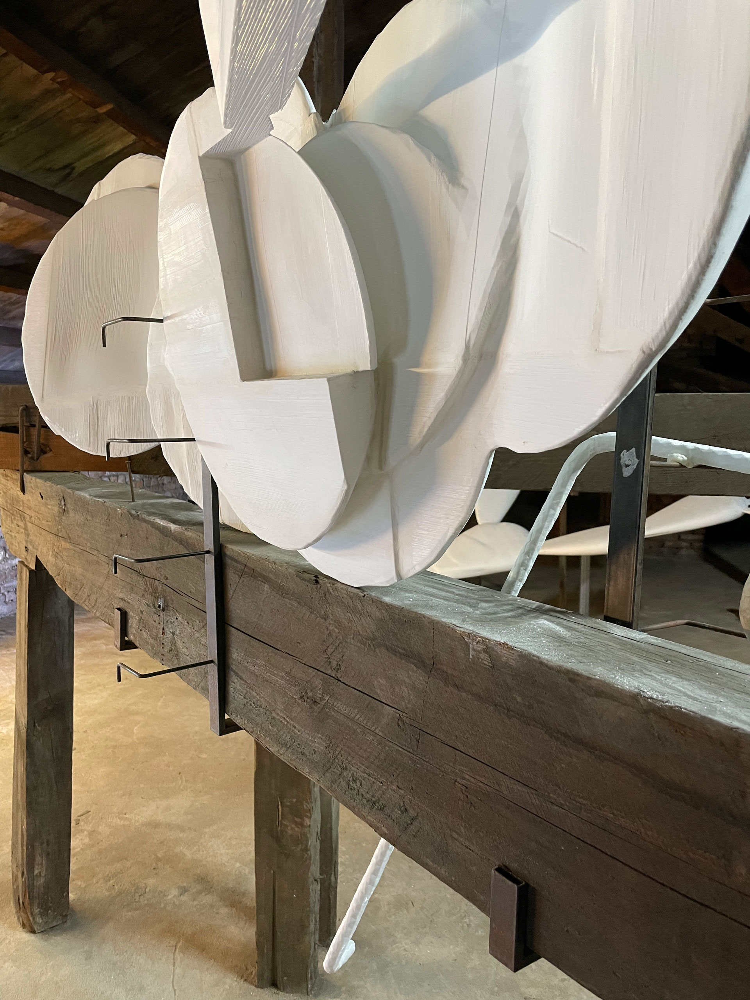
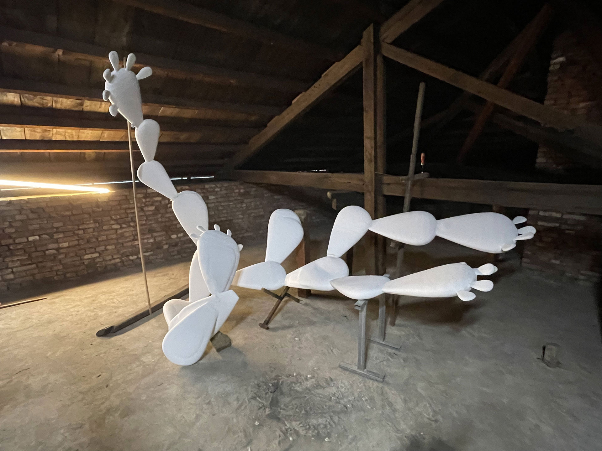
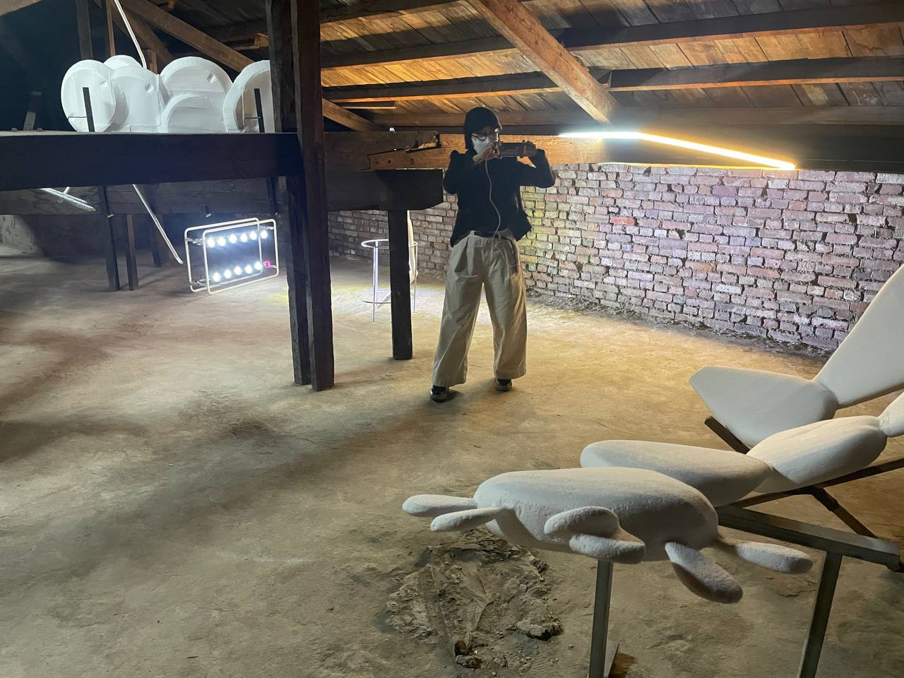
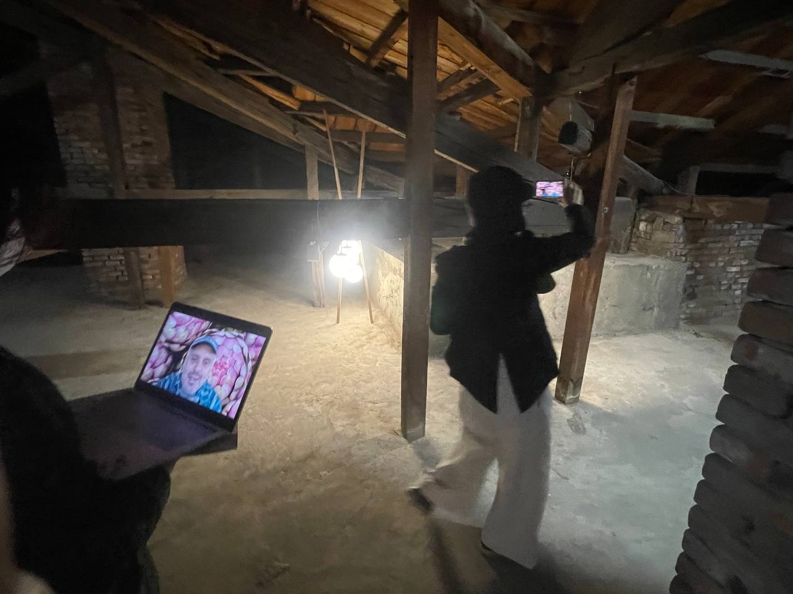
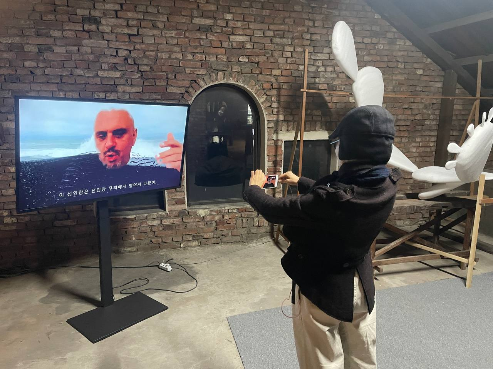

워크숍 ‘A Day, Holiday’의 스토리 텔링 과정을 비디오 아카이브로 상영
( 시립 미술관 ‘걱정을 멈추고 폭탄을 사랑하기' 전의 설치 전경 )
( 서울 시립 미술관 ‘걱정을 멈추고 폭탄을 사랑하기' 전의 설치 전경 )
( 서울 시립 미술관 ‘걱정을 멈추고 폭탄을 사랑하기' 전의 설치 전경 )
워크숍 ‘A Day, Holiday’이 전시에서 실제 오브제로 구현
( Ismail Ali, 서울 시립 미술관 ‘걱정을 멈추고 폭탄을 사랑하기' 전의 설치 전경 )
( Afri Harry, 서울 시립 미술관 ‘걱정을 멈추고 폭탄을 사랑하기' 전의 설치 전경 )
( Afri Harry, 서울 시립 미술관 ‘걱정을 멈추고 폭탄을 사랑하기' 전의 세부 사진 )
( Ismail Ali, 서울 시립 미술관 ‘걱정을 멈추고 폭탄을 사랑하기' 전의 설치 전경 )

( Ismail Ali, 서울 시립 미술관 ‘걱정을 멈추고 폭탄을 사랑하기' 전의 설치 전경 )
라이브 방송 / 영국 참가자들을 위한 온라인 전시 투어
  